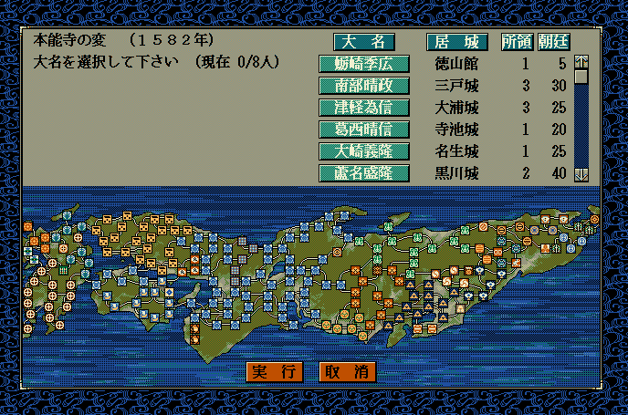
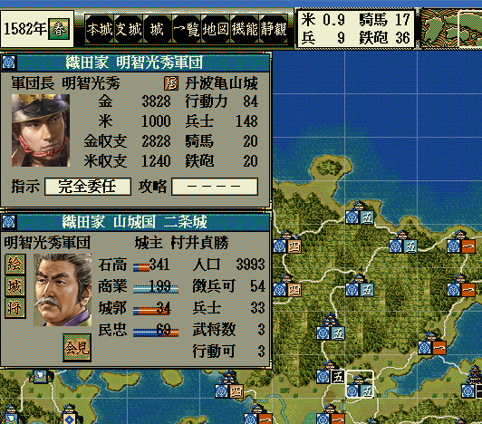
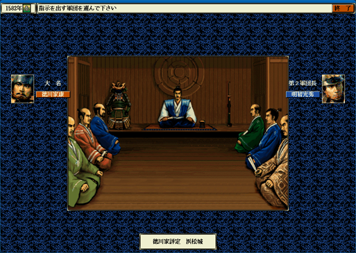
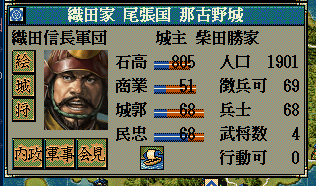

軍団の独立・新設・軍団間の城の移動
この項目はやや難易度が高めの項目となります。
イベントハンドラ の
On_シナリオデータ反映直後
などでも類似のサンプルが触れられていますので、
併せて参照すると理解が進みやすいことでしょう。
とある大名は、あらたに軍団を新設可能なのか？ の情報を得る
Get_軍団新設候補情報(int 大名番号【配列用】)
大名内に軍団を新設するのは良いが、
何もないところから、「軍団作成可能な情報」を正確に集めるのは大変である。
この関数は、
- 今、指定の大名に新たに軍団を新設することは、様々な条件を考えて可能なのか？
- どの武将を軍団長にするのか、候補リスト全て
- どこの城を軍団長の拠点城として選択できるのか、そのリスト全て
- 軍団の割当番号（１～８の番号）で、余っている番号は何か、そのリスト全て
などの面倒な計算を全て肩代わりして、一気に返り値として返してくれます。
この関数で得られた結果値の情報を元に、
Set_軍団新設(...)関数を利用する
と、大名内に新たな軍団を作ることが可能となります。
Get_軍団新設候補情報(...)は返り値として、「軍団新設候補情報型」の値を返し、その値は、
- Is新設可能(結局、いろいろ計算した結果、軍団は新設可能なのか？)
- 候補軍団割当番号リスト(余っている軍団割当番号（１～８）は何なのか？
- 候補城番号【配列用】リスト(どこの城で軍団を新設できるのか、その候補の城番号「配列用」のリスト）
- 候補武将番号【配列用】リスト(どの武将を軍団長として任命できるのか、その候補の城番号「配列用」のリスト）
をフィールドとして持ちます。
新たな軍団を指定の武将を軍団長として新設する
int Set_軍団新設(int 武将番号【配列用】, int 城番号【配列用】, 軍団新設候補情報型 チェック情報)
このような、Get_軍団新設候補情報(...)関数で得られた情報があることで、
その結果の値の中から、自分で選択し、Set_軍団新設(...)を安全に実行することが出来ます。
軍団新設に成功した場合は、返り値として「軍団番号【配列用】」が返ってきます。
武将候補リストや、城候補リストが存在することで、「安全に」「誰か特定の人物」を、
軍団長にすることが出来るようになります。
軍団を独立させて、大名とする
int Set_軍団独立(int 軍団番号【配列用】)
軍団をまるまる大名へと独立させます。
状況が明確であれば、以下のように対象を指定するだけで良いでしょう。

「新設した軍団」をそのまま、「独立した大名」とするのも、
Set_軍団新設(...)関数の返り値をそのまま使えるので、楽です。
同じ大名家のＡ軍団とＢ軍団において、Ａ軍団に所属するとある城を、Ｂ軍団の所属へと変更する
bool Set_非本拠城所属軍団(int 城番号【配列用】, int 新軍団番号【配列用】)
城の帰属を移動させる命令となります。
同じ大名配下、という前提で、軍団Ａ配下の城を、軍団Ｂ配下の城へと変更します。
対象の城は「非本拠の城」である必要があります。
「非本拠」とは、「大名がいない城」「軍団長がいない城」を指します。
一番簡単な例は、「状況が決め打ちできる」時でしょう。
使い方を理解するという点で、有効です。

大抵の場合は、上記のように「城が特定を名指しで」とはいかないことでしょう。
こういった場合は、軍団配下の城から割り出していきましょう。
(もちろん色々な考え方があります)
勝家が持っている城を、可能な限り秀吉に渡してみましょう。
とある軍団の所属先の大名家を変更する
bool Set_軍団所属大名(int 軍団番号【配列用】, int 宛先大名番号【配列用】)
とある軍団を別の大名家へと帰属を変更する
帰属の変更に成功した場合はtrue、帰属の変更に失敗した場合にはfalse

城主の入れ替え
bool Set_城主(int 武将番号【配列用】)
これは指定の「現役武将Ａ」を「城主」とする関数である。
- ①もしも、「現在の城主Ｂ」が、ただの普通の城主であれば、指定の「現役武将Ａ」が単に城主となる。
- ②もしも、「現在の城主Ｂ」が「軍団長」であったならば、この関数によって「現役武将Ａ」が、城主 兼 軍団長となる。
- ③もしも、「現在の城主Ｂ」が「大名」であったならば、この関数によって「現役武将Ａ」が、城主 兼 大名となり、「大名だった人」は宿老となる。
void カスタム::On_プレイヤ担当ターン《メイン画面》() {
// 柴田勝家が一般武将で、かつ、城主ではない時に、城主にする
int iBushouID = Get_武将番号【配列用】(顔番号::柴田勝家);
if (0 <= iBushouID && iBushouID < 最大数::武将情報::配列数) {
// どの城にいるか
int iCastleID = p武将情報[iBushouID].所属居城【城番号】 - 1;
if (0 <= iCastleID && iCastleID < 最大数::城情報::配列数) {
// 通常の身分か確かめる
if (p武将戸籍情報[iBushouID].状態 == 状態::現役) {
if (身分::宿老 <= p武将戸籍情報[iBushouID].身分 && p武将戸籍情報[iBushouID].身分 <= 身分::足軽頭) {
int success = Set_城主(iBushouID);
if (success) {
デバッグ出力 << "柴田勝家は城主になりました" << endl;
}
}
}
}
}
}

軍団や大名情報と、マップ上の描画が食い違った場合
上記で「大名としての独立」に関する関数は、
実行するイベントハンドラによっては、
画面上の描画が反映されません。
そのような場合は、フェイドアウト()、フェイドイン()、あるいは描画更新()関数を利用しましょう。
より詳細を知るには...
「軍団の独立・新設・軍団間の城の移動」に関する主な所は以上となります。
詳しくは「軍団情報型.h」などを参照してください。